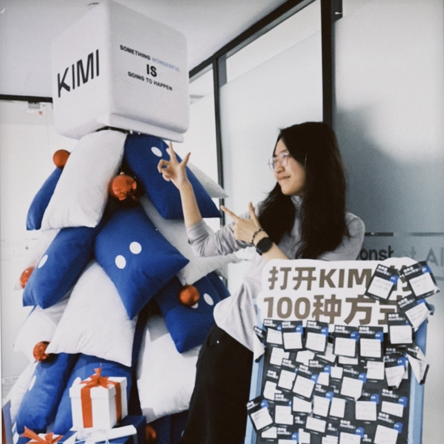
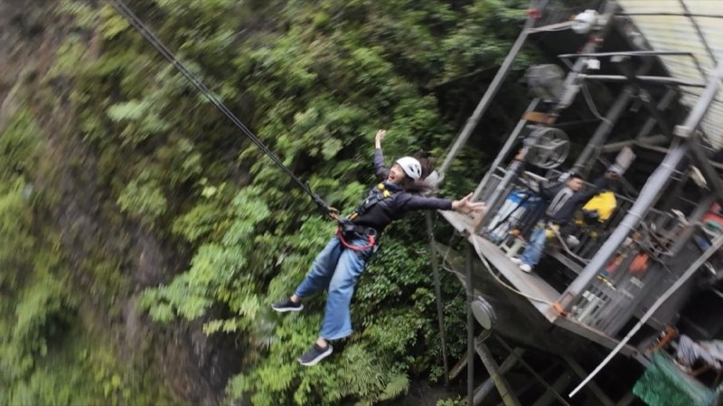
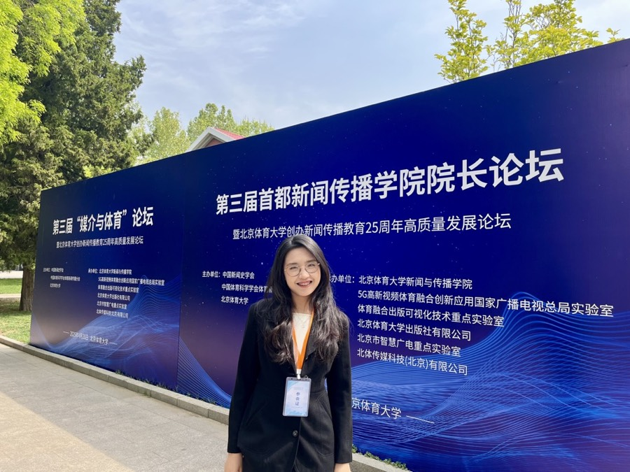
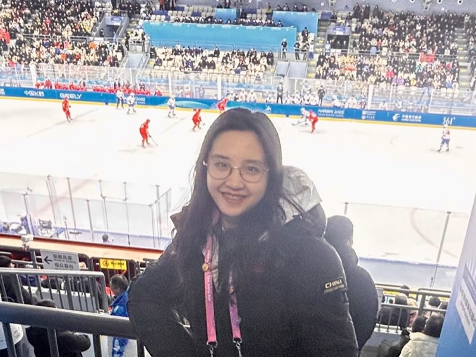
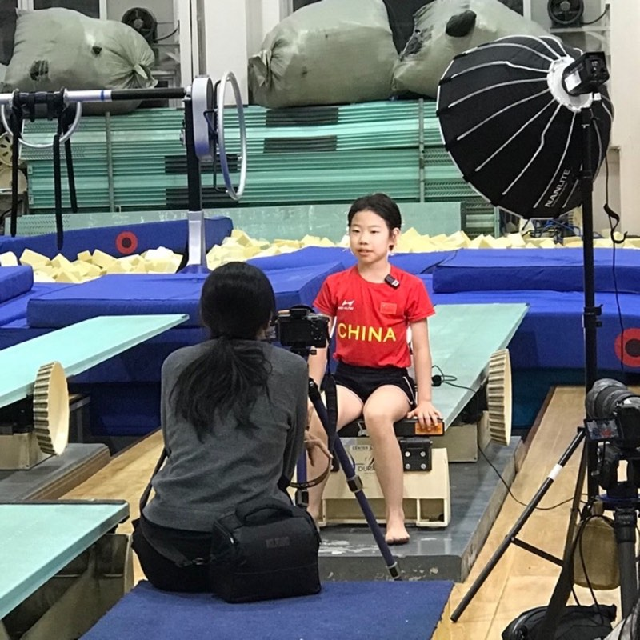
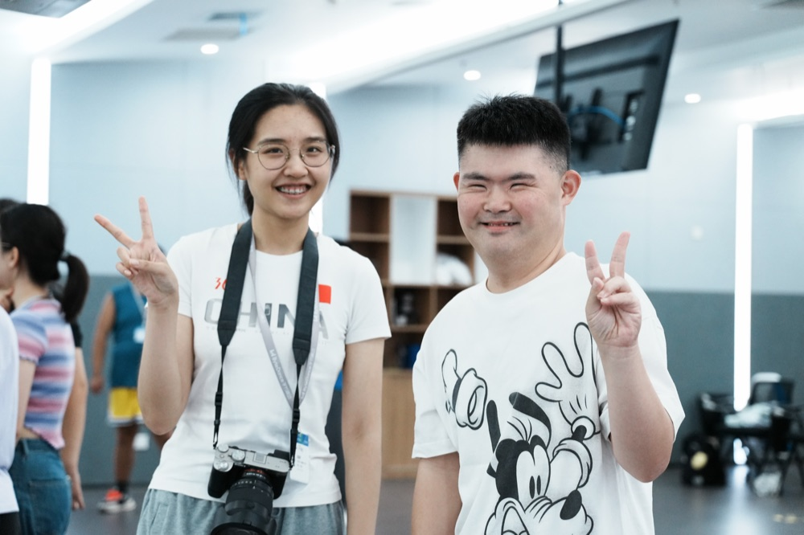
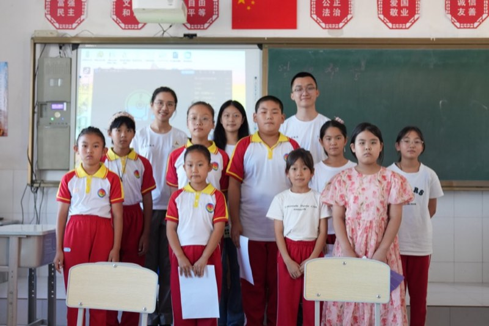
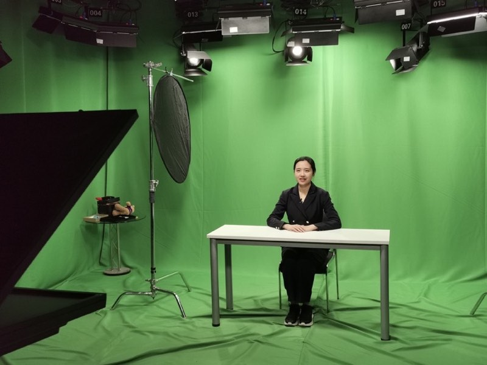
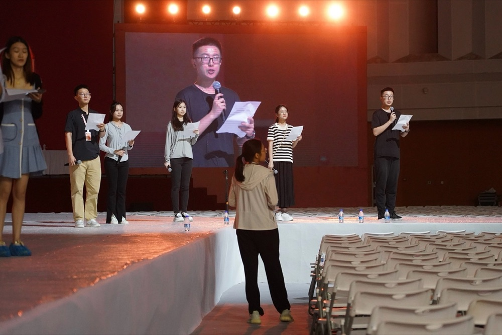
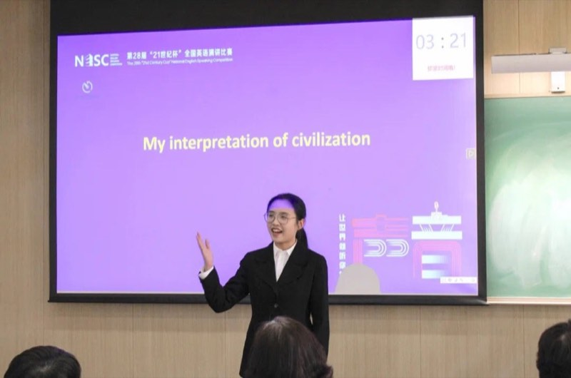

Hi 你好，我是珮伊
一个穿梭于人文和科技之间的探索者
永远不会放弃的事情是和真实的人产生连接，以及对美的追求
- ✓在 Kimi 月之暗面探索 AI 行业最前沿，参与 K3 开源模型的 SOTA 时刻
- ✓黑客松 36 小时内完成 AI 软件从 0 到 1，拿下"优秀产品奖"
- ✓在豆瓣社区分享文科生 AI 使用经验，获得 5500+ 点赞收藏
- ✓热衷公益，兴安盟支教、扎根残障社群，创作纪录片、视频报道
- 复旦大学新闻学院新闻与传播 硕士2026—2028
- 伦敦政治经济学院（LSE）全球媒介与传播 硕士2026—2027
- 中国传媒大学电视学院国际新闻与传播 学士2022—2026
- 北京市第三十五中学高中2019—2022
I.智能传播、媒介治理与青少年社会心态
AI、智能体进入日常生活后，青少年如何接触、理解与信任它们，技术使用如何塑造社会心态，以及算法治理与未成年人保护如何回应。
📝 未成年运动员媒介形象研究
🤖 头部 AI 公司用户增长实习的一线观察
🧒 面向流动儿童 AI 科普公益的深度扎根（字节跳动跳跳糖公益）
II.可及性、数字包容与无障碍传播
对弱势群体（以残障者为代表）的媒介可及性：接入（数字不平等与可行能力）、体验（人机交互与无障碍信息设计）、参与（媒介融入与自我呈现）。
🎓 央视春晚无障碍转播研究（校级优秀毕业论文）
♿ IAMCR 包容性传播和残障研究分会独作论文（残障创作者的数字民族志）
🧩 北大"孤独症儿童信息化养育干预"项目研究助理
🤝 残障群体志愿服务 180+ 小时 · IAMCR-ICO 中国秘书处成员
III.智能时代的体育与国际传播
体育是跨语言、跨文化的"通用语言"：关注大型赛事的智媒化转播生产、运动员媒介形象的建构与伦理，以及体育在公共外交与国家叙事中的作用。
🏅 《媒介与体育》集刊独作论文
🤖 NCA 双年会一作论文（AIGC × 体育视听新闻）
🎙️ 国际赛事转播协调（杭州亚运会 / 哈尔滨亚冬会 / 短道速滑世锦赛）
-
独立作者
《"领奖台上"到"聚光灯下"：中国未成年运动员媒介形象构建中的伦理困境》
《媒介与体育》集刊 2025 年第 2 期（页 99–110） -
独立作者
Performing Disability in the Digital Marketplace: Self-Representation, Stigma, and the Commodification of the Body in Chinese Social Media
IAMCR 2025 年会 · 包容性传播和残障研究分会 -
第一作者
Artificial Intelligence-Driven Innovation in Chinese Sports Audiovisual News Coverage: Empowerment, Challenges, and Future Directions
第五届 NCA（全美传播学会）双年会 · "全球化时代的传播、媒介与政府治理" -
独立作者
Breaking Through Barriers: Digital Employment for Visually Impaired People from the Perspective of Technology Empowerment
NCA 第十届中美传播学者高峰论坛
-
部级项目
"国际网络视听传播分层、分类、分群叙事体系研究"（国家广播电视总局部级社科研究项目）
研究成员（项目组唯一本科生）｜2024.01–2024.09 -
横向课题
"全媒体视域下广西区域性国际联动传播体系研究"（广西日报传媒集团委托）
研究成员｜2025.03–2026.03 -
学术工作
IAMCR-ICO（包容性传播和残障研究分会）中国秘书处成员
协助筹办 IAMCR 残障研究中国区域网络研讨会及 2025 新加坡年会宣推联络｜2024.12 起 -
学术工作
"孤独症儿童信息化养育干预研究"（北京大学人口研究所）
研究助理｜2025.01–2025.04
《可及之上：央视春晚无障碍融合传播的互动仪式研究》 校级优秀毕业论文
以 2025、2026 两届央视春晚无障碍转播（视障版/听障版）为纵向案例，基于柯林斯互动仪式链理论，采用网络民族志和半结构访谈，组建听障社群（53 人）与视障社群（32 人）进行参与式观察，获取有效互动文本 223 条；跨两届春晚访谈残障受访者 16 人。研究发现，感官代偿技术拆除了残障群体进入媒介仪式的宏观屏障，却在微观情境中制造了新的参与分层：技术可及性因残障类型、设备条件与平台适配而并不均衡；传者端的技术整合与受众端的家庭仪式空间之间存在反直觉的张力；残障观众并非被动接收者，而是基于切身经验持续提出替代方案的"产品洞察者"。论文提出"感官代偿式共在"，尝试拓展互动仪式链理论在残障传播中的应用，并就分轨推流、残健同屏设计、平台内置社交功能、无障碍服务常态化给出实践建议。
-
Moonshot AI（Kimi） · AI 增长运营，2026.01–2026.08
- 核心模型和 Agent 产品宣发：跟进 K2.5/K2.6/K3 模型与 Kimi Work 桌面端、Kimi Claw（Kimi 版小龙虾）等产品宣发，半年累计发布达人内容 500+ 条、曝光超 5000 万；个人工作完整覆盖达人营销、内容素材制作、用户洞察与竞品分析等板块，并参与抖音、小红书官方账号的内容策划与发布
- 国内全渠道达人营销：独立完成从达人筛选、建联、Brief 撰写、内容共创、效果追踪和数据复盘全流程，建联 130+ 位 KOL/KOC，投放覆盖小红书、视频号、公众号、抖音、B站、即刻、X 和 YouTube 等平台
- 用户洞察与竞品调研：搭建竞品调研框架，输出 13 份竞品调研（调研产品如 Claude Code/Cowork、Codex、WorkBuddy 等，模型如 Fable、Image 2.0、Gemini 3.1 Pro、GLM 5.2 等），复盘大规模用户数据和 15+ 期爆款案例，识别痛点场景和可迁移用法，为后续宣发积累弹药
- 内容素材自闭环：基于 Kimi 模型能力与提示词工程，跑通视频生成、3D 网页、互动游戏等多模态玩法，制作科研、办公、金融投研、设计创意场景多个标杆案例（Showcase）用于官方或达人展示，官方 X 案例单条最高 24 万+ Views，小红书官方 PPT 案例笔记单条 3000+ 赞藏
-
央视环球国际视频通讯社（CCTV+），2025.07–2025.09
- 内容制作与本地化：负责 30+ 条视频新闻的稿件编译与视频制作，内容涵盖文化、科技、社会等领域，面向国内媒体客户分发；参与纪录片《舌尖上的中国 第四季》等重点项目的英译与本地化重制
- 国际舆情监测：日常跟进法新社、美联社等通讯社及海外主流媒体的报道动向，进行素材挖掘、新闻摘编和事实核查
-
中央广播电视总台创新发展研究中心，2024.01–2024.04
- 学术联络与跨部门协作：对接 30+ 位制片人、编导与国内外专家团队，深度参与学术联络工作，确保信息流转的高效与准确
- 内容评审和案例库搭建：参与总台年度奖项评选的 200+ 份资料编审与复盘，整理台内国际传播优秀案例库；协助撰写行业分析简报 2 份，为战略布局提供信息参考
- 行业前沿洞察与活动落地：协助中心进行国际传播视听前沿趋势的调研，邀请学界、业界专家进行 AI 赋能内容生产和视频创作系列授课 3 期










- 🏅国家奖学金2025 · 学业
- 🎓中国传媒大学优秀毕业生2026 · 学业
- 📖中国传媒大学优秀毕业论文2026 · 学业
- 🏆"外研社·国才杯"国际传播赛项全国银奖、北京市金奖2024 · 竞赛
- 🎤首都高校英语演讲风采大赛三等奖2023 · 竞赛
- 💻抖音创变者黑客松优秀产品奖2026 · 开发
- 🏊国家跳水二级运动员2013 · 体育